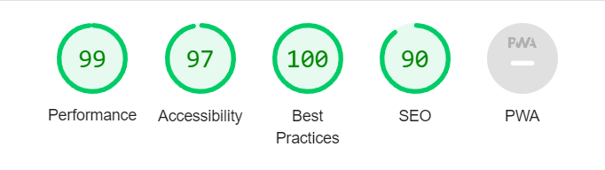
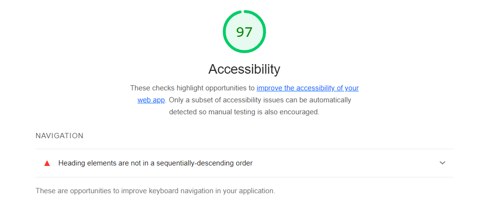
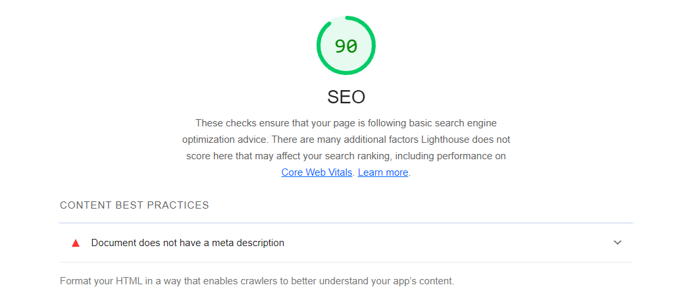
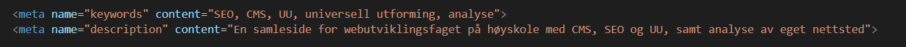

Analyse
For å analysere nettstedet så har jeg brukt både Lighthouse for å analysere hvor bra SEO nettstedet har, i tillegg til at jeg har brukt Wave som er produsert av Webaim for å analysere hvor bra nettstedet er for universell utforming. Den heuristiske evalueringen har jeg gjort selv ved å ta i bruk de 10 heuristiske reglene for brukervennlighet av Jakob Nielsen. Jeg har analysert alle sidene på nettstedet hver for seg, men resultatet ble det samme på de alle.
Lighthouse analysen
Analysen jeg gjorde for å sjekke kvaliteten for SEO på nettstedet ga meg disse resultatene:
Når jeg går gjennom disse resultatene så ser alt veldig bra ut, det er noe som kan forbedres, blant annet tilgjengelighet og SEO.
For å forbedre tilgjengeligheten så har jeg fått en tilbakemeldingen. Tilbakemeldingen sier i fra at jeg har brukt h-tagene litt merkelig, altså så har jeg brukt en h1-tag, for så å gå rett videre på en h3-tag. For å fikse opp i dette så gjorde jeg rekkefølgen på h-tagene mine riktige, altså at jeg går fra h1 til h2 til h3 osv, i stedet for å hoppe fra h1 til h3.
Jeg fikk også en tilbakemelding på at jeg hadde for dårlig SEO på nettstedet. For å fikse opp i dette så la jeg inn metadata på nettsiden siden dette var noe jeg ikke hadde fra før av.
Wave analysen
Analysen jeg gjorde på Wave for universell utforming av nettstedet ga disse resultatene:
Når vi ser på disse resultatene så har nettstedet kun fått tre advarsler, men ingen error.
Den første advarselen går ut på det samme som vi fikk tilbakemelding på når vi analyserte SEO, at h-tagene ikke er i riktig rekkefølge.
Den andre advarselen er at det er link i nav-baren som linker til den samme siden man er inne på. Den referer til “hjem”-knappen i navbaren og logoen som begge linker til hjemmesiden.
Den tredje og siste advarselen jeg fikk var at nettstedet var avhengig av datamus. Jeg har selv forsøkt å navigere meg rundt de forskjellige sidene med hjelp av tab-knappen, og det oppstod ingen problemer.
Heuristisk evaluering
På den heuristiske evalueringen så valgte jeg meg ut de reglene av de 10 hovedreglene som jeg selv syntes var mest relevante for nettstedet. Det at jeg selv måtte gjøre denne evalueringen synes jeg selv at var litt vanskelig da jeg er lært opp til at man skal være helt nøytral når man gjør en slik evaluering. Det er vanskelig å være 100% nøytral når man jobber med sitt eget nettsted og eget design.
De tre heuristikkene jeg har valgt ut er “user control and freedom”, “consistency and standards” og “error prevention”. Grunnen til at jeg valgte disse var fordi jeg selv følte at disse var mest relevant til nettstedet vi nå arbeider med.
“User control and freedom” går ut på å gi brukerne av nettstedet alltid en rask utvei hvis de setter seg fast. For eksempel lenker til forsiden og brødsmulestier. På dette nettstedet så har jeg flere lenker tilbake til forsiden, men det finnes ingen brødsmulesti. Dette er fordi jeg selv ikke synes at siden er såpass stor at det går an å rote seg bort, samt hvis man roter seg bort så finnes det flere lenker til andre sider i navbaren.
“Consistency and standards” går ut på at nettstedet ikke burde skille seg så mye ut fra andre lignende nettsteder. For eksempel så burde oppsettet være nokså likt, og ordbruken burde være relevant. Det som er likt med dette nettstedet sammenlignet med andre lignende nettsteder er bruken av hamburger-meny når man bruker nettstedet på en mindre skjerm, og plassering av innhold og navigering. Noe som kan skille seg ut er at tittelen til nettstedet ikke lenker til forsiden, men logoen og “hjem”-knappen i navbaren gjør dette.
“Error prevention” går ut på at du skal forhindre at brukere opplever error når de bruker nettstedet ditt. Dette kan man fikse ved å analysere koden din, og trykke deg gjennom alle lenker som finnes på nettstedet.